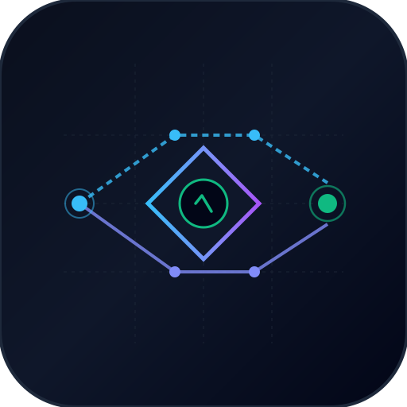

Low-Latency Entropy-Gated Speculative Retrieval & Hybrid RRF (BM25 + Vector)
Saat kueri memiliki distribusi probabilitas tajam (entropi \( H < H^* \)), sistem langsung mengambil jalur Speculative Fast-Path (< 1 ms). Jika kueri ambigu (\( H \ge H^* \)), sistem mengaktifkan Deep Cross-Encoder Reranking untuk menjaga presisi.
| Arsitektur Retrieval | P50 Latensi | P99 Latensi | NDCG@10 | Recall@10 | Porsi Rerank | Penghematan Komputasi |
|---|---|---|---|---|---|---|
| Vanilla Bi-Encoder | 0.64 ms | 1.43 ms | 0.8279 | 0.7778 | 0.0% | 0.0% |
| Full Cross-Encoder | 2.03 ms | 3.83 ms | 0.8536 | 0.8611 | 100.0% | 0.0% |
| SpecRAG (Ours) | 0.74 ms | 5.05 ms | 0.8536 | 0.8611 | 8.3% | 91.7% Terhemat |